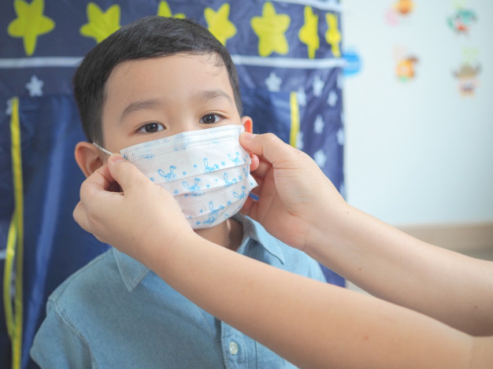

15 NOV 19
2

Every child has to wear mask.
At first, it was mostly doctors, nurses, and others in health care settings who wore masks.
But now, as other people wear them, more and more kids are seeing something they're not
used to seeing. For them, it can be strange or a little scary, especially if they need to
put on masks too.